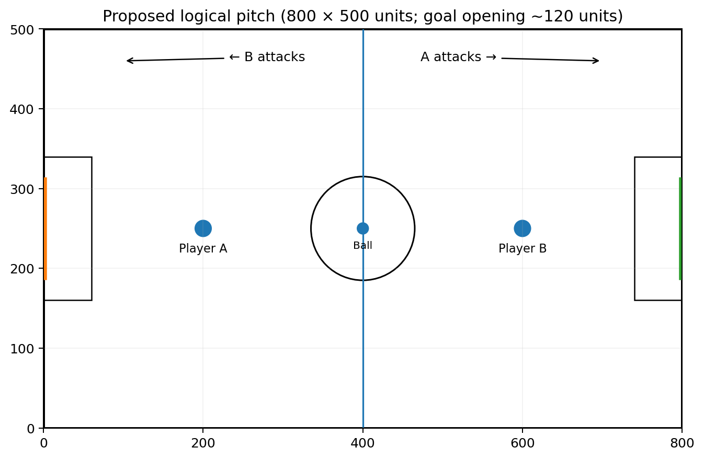
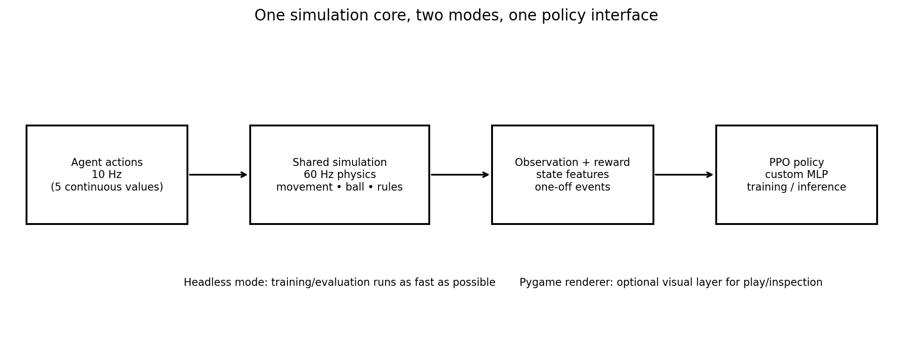
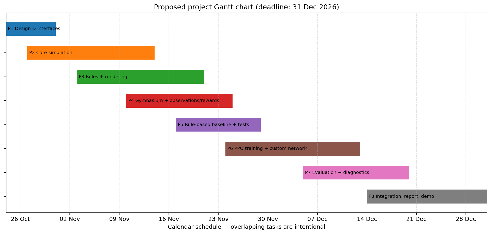

Source-backed code, design, tests, original plan, and team roadmap. Distinguish implemented, approved starting settings, proposed, and planned labels.
409 nodes · 1310 visual edges · 19 communities. Engine checks: 194 tests passed; full-stack import test intentionally excluded.
This is not a finished football game: attachment, kicks, possession, collisions, scoring, rendering, and RL remain incomplete. Historical figures are not current implementation claims.
AST extraction is local. Semantic token counts were not reported by the harness; they are recorded as unknown, not zero. Free model routes were used; no additional API keys or hosted Graphify service were configured.
{'undirected_same_endpoint_collapsed_edges': 123}. See diagnostics; the visual graph can merge repeated/parallel source relationships.
# Project review map This is the human entry point for the Graphify project graph. Labels distinguish implemented code, approved starting settings, proposals, and planned team work. The graph is an index of source evidence, not proof that every planned feature exists. ## Source authority and history - `football_drl_final_project_plan.docx` is the original team plan and assignment context. - `AGENTS.md` records the newer student-approved decisions and implementation status. - `docs/engine.md` documents current engine behavior and its tests. - `README.md`, `pyproject.toml`, `uv.lock`, and `.python-version` describe reproducible setup. - `game/` and `tests/` are the current implementation and executable checks. - The original plan's continuous x/y movement action is superseded by the approved nine-direction + continuous effort/power + binary kick interface. The engine only implements its movement subset; the hybrid PPO encoding is still open. - The plan's pitch drawing uses y-up; the approved engine convention is x-right/y-down. - The graph must preserve these historical differences rather than silently merging them. ## Implemented: Member A foundation - Immutable player, free-ball, movement-action, configuration, and simulation snapshots. - 60 Hz physics; each decision advances up to six individual ticks (10 Hz). - Both players use identical movement and stamina equations. - Nine normalized movement directions including idle, continuous effort, gradual target-velocity acceleration, smooth facing, constant idle braking, and pitch bounds. - Stamina consumption/recovery and gradual speed/acceleration fatigue, not momentum scaling. - Free-ball constant-deceleration motion, including partial-tick stopping; no pitch clamp. - Reset, side swapping, 60-second clock running through restart scaffolds, and one-shot finish. - Headless movement, stamina, and ball inspection commands. No graphical inspection yet. ## Approved starting settings: still subject to tuning | Setting | Starting value / interpretation | |---|---| | Coordinates | x right, y down; facing zero east, positive clockwise | | Movement intent | Idle, N, NE, E, SE, S, SW, W, NW; diagonals normalized | | Effort / kick power | Continuous `[0,1]`; binary kick request once per decision | | Speed / acceleration | 160 units/s base speed; 320 units/s² base acceleration | | Player idle braking | 40 units/s²; 4 s to stop from base speed, needs play testing | | Stamina | 100 maximum; 5/s full-effort drain; 100/15 per second idle recovery | | Neutral effort | 0.5; no drain/recovery for active movement at this effort | | Empty-stamina performance | 50% speed/acceleration; braking and facing unaffected | | Free-ball roll | 300 units/s reference, 100 units/s² deceleration, 3 s / 450 units | | Clock | 3,600 ticks; time runs during restarts; goals will not end the match | Pitch size 800×500, player radius 15, and turn rate 2π radians/s remain configurable implementation defaults. Reference ball speed does not finalize maximum kick speed. ## Planned: remaining Member A mechanics 1. Controlled-ball attachment, authoritative possession owner, and separate last toucher. 2. Facing-based kick release and power mapping; precise request expiry/cooldown semantics. 3. Player/ball and player/player collisions, free-ball recovery, steal contest and cooldown. 4. Swept full-ball goal/boundary checks, scores, restart placement/ownership, and events. 5. Renderer/environment equivalence, throughput measurement, and engine report section. Restart phases currently only freeze state and count down. They do not implement football restarts; stamina recovery during real restarts is not decided. The ball can currently leave the pitch without scoring. A3 and the overall Member A mission are not complete. ## Planned: team ownership and interfaces | Owner | Area | Main handoff | |---|---|---| | A | Shared simulation and physics/event tests | State, actions, fixed stepping, trustworthy transitions | | B | Pygame, human controls, rule-based baseline | Reads engine state; never owns physics | | C | Gymnasium observation/reward/action adapter | Computes rewards outside engine; agrees hybrid action encoding with D | | D | PPO/custom MLP, logging, evaluation/release | TensorBoard undiscounted returns, CSV, notebook, report | PPO is the chosen baseline, not an implemented learner. Final observation features, reward weights, network architecture, training budget, and baseline behavior are open. Root play/train/test/observe scripts are scaffolds. The evaluation notebook/report remain deliverables, not existing completed results. ## Assignment and validation context Delivery deadline: 31 December 2026; proposed feature freeze: 19 December. The plan requires graphical/headless modes, customized network, a documented rule-based baseline, TensorBoard episode returns, multi-metric comparison, CSV, `evaluate.ipynb`, README/uv setup, and PDF report/slides. Four-person team approval may need confirmation. Evaluation should use held-out seeds and both attacking sides; proposed sample size is about 100 matches per comparison if feasible. Outcomes and goal difference matter more than rising shaped reward. Steals and loose-ball recovery must remain distinct. Engine tests run with `uv run --locked --only-group engine pytest -m "not full_stack"`. The full-stack import test is intentionally excluded without graphics/ML dependencies. Deterministic unit tests do not demonstrate realistic tuning, successful training, or completed integration. See actual command results rather than inferred test success.


